MARCH 7TH / DOLL GARMENT WORKSHOP
完整衣服，从每一层到每一片
分层前后外形、真实衣片轮廓、缝份、背部开合与尺寸集中在这里。原有纹样将按这些衣片试穿后的缝线重新定位。
完整服装试版 / v0.2 / mm
存护 · 囡囡体 S 胸
胸围 170、腰围 128、肩宽 86 mm 等来自已登记的商品标称；缺少的长度采用明确列出的试版假设。
每层衣服的外形与穿搭关系
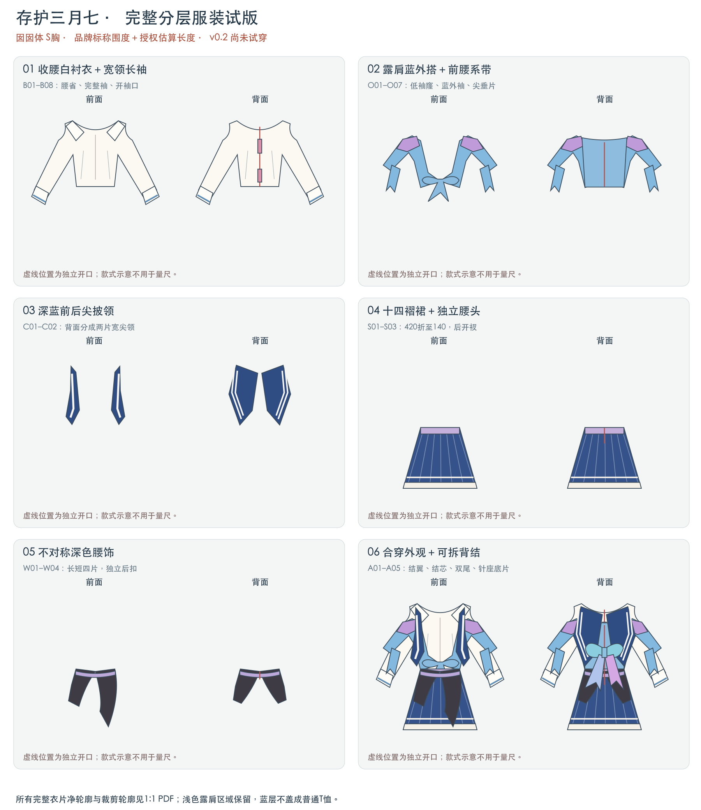
全套衣片总览
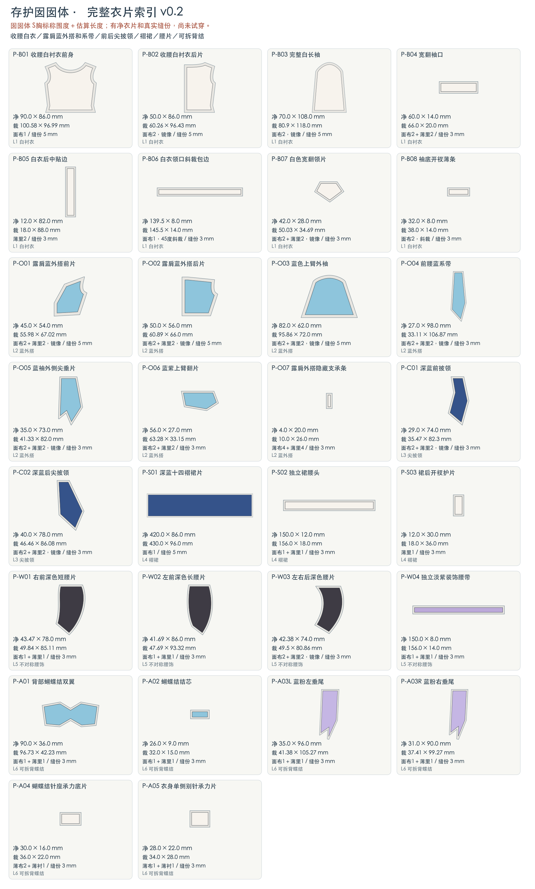
逐片查看 · 30 种版片
前后片、袖片、裙片及贴边各自列出；裁几片、镜像还是对折，以单片标注为准。整套图不可统一缩放来调尺码。
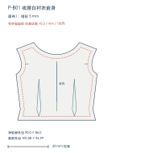
P-B01 · 收腰白衬衣前身 裁剪数量：面布1 面料：M5 点击查看带尺寸、缝线和裁边的原图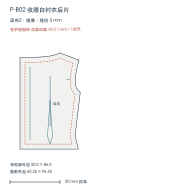
P-B02 · 收腰白衬衣后片 裁剪数量：面布2，镜像 面料：M5 点击查看带尺寸、缝线和裁边的原图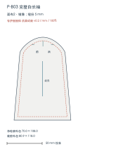
P-B03 · 完整白长袖 裁剪数量：面布2，镜像 面料：M5 点击查看带尺寸、缝线和裁边的原图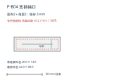
P-B04 · 宽翻袖口 裁剪数量：面布2＋薄里2 面料：M5 点击查看带尺寸、缝线和裁边的原图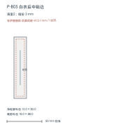
P-B05 · 白衣后中贴边 裁剪数量：薄里2 面料：M5 点击查看带尺寸、缝线和裁边的原图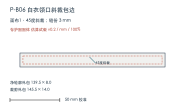
P-B06 · 白衣领口斜裁包边 裁剪数量：面布1，45度斜裁 面料：M5 点击查看带尺寸、缝线和裁边的原图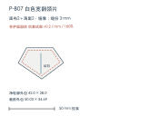
P-B07 · 白色宽翻领片 裁剪数量：面布2＋薄里2，镜像 面料：M5 点击查看带尺寸、缝线和裁边的原图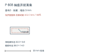
P-B08 · 袖底开衩薄条 裁剪数量：面布2，斜裁 面料：M5 点击查看带尺寸、缝线和裁边的原图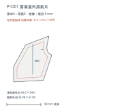
P-O01 · 露肩蓝外搭前片 裁剪数量：面布2＋薄里2，镜像 面料：M3 点击查看带尺寸、缝线和裁边的原图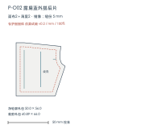
P-O02 · 露肩蓝外搭后片 裁剪数量：面布2＋薄里2，镜像 面料：M3 点击查看带尺寸、缝线和裁边的原图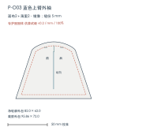
P-O03 · 蓝色上臂外袖 裁剪数量：面布2＋薄里2，镜像 面料：M3 点击查看带尺寸、缝线和裁边的原图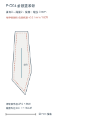
P-O04 · 前腰蓝系带 裁剪数量：面布2＋薄里2，镜像 面料：M3 点击查看带尺寸、缝线和裁边的原图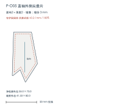
P-O05 · 蓝袖外侧尖垂片 裁剪数量：面布2＋薄里2，镜像 面料：M3 点击查看带尺寸、缝线和裁边的原图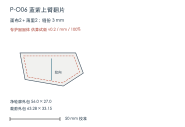
P-O06 · 蓝紫上臂翻片 裁剪数量：面布2＋薄里2 面料：M3 点击查看带尺寸、缝线和裁边的原图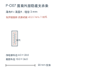
P-O07 · 露肩外搭隐藏支承条 裁剪数量：薄布4＋薄里4 面料：M5 点击查看带尺寸、缝线和裁边的原图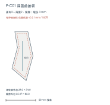
P-C01 · 深蓝前披领 裁剪数量：面布2＋薄里2，镜像 面料：M2 点击查看带尺寸、缝线和裁边的原图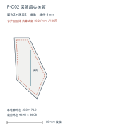
P-C02 · 深蓝后尖披领 裁剪数量：面布2＋薄里2，镜像 面料：M2 点击查看带尺寸、缝线和裁边的原图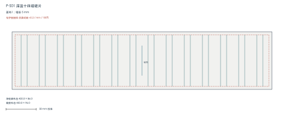
P-S01 · 深蓝十四褶裙片 裁剪数量：面布1 面料：M1 点击查看带尺寸、缝线和裁边的原图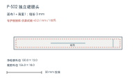
P-S02 · 独立裙腰头 裁剪数量：面布1＋薄里1 面料：M5 或M1 点击查看带尺寸、缝线和裁边的原图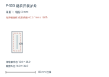
P-S03 · 裙后开衩护片 裁剪数量：薄里1 面料：M5 点击查看带尺寸、缝线和裁边的原图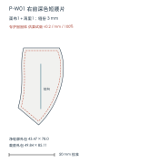
P-W01 · 右前深色短腰片 裁剪数量：面布1＋薄里1 面料：M2 点击查看带尺寸、缝线和裁边的原图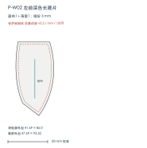
P-W02 · 左前深色长腰片 裁剪数量：面布1＋薄里1 面料：M2 点击查看带尺寸、缝线和裁边的原图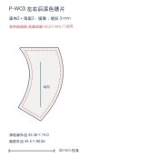
P-W03 · 左右后深色腰片 裁剪数量：面布2＋薄里2，镜像 面料：M2 点击查看带尺寸、缝线和裁边的原图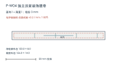
P-W04 · 独立淡紫装饰腰带 裁剪数量：面布1＋薄里1 面料：M4 点击查看带尺寸、缝线和裁边的原图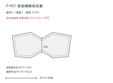
P-A01 · 背部蝴蝶结双翼 裁剪数量：面布1＋薄里1 面料：M4 点击查看带尺寸、缝线和裁边的原图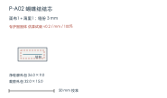
P-A02 · 蝴蝶结结芯 裁剪数量：面布1＋薄里1 面料：M4 点击查看带尺寸、缝线和裁边的原图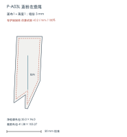
P-A03L · 蓝粉左垂尾 裁剪数量：面布1＋薄里1 面料：M4 点击查看带尺寸、缝线和裁边的原图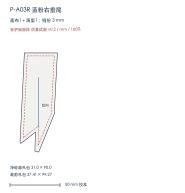
P-A03R · 蓝粉右垂尾 裁剪数量：面布1＋薄里1 面料：M4 点击查看带尺寸、缝线和裁边的原图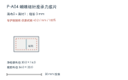
P-A04 · 蝴蝶结针座承力底片 裁剪数量：薄布2＋薄衬1 面料：M5 点击查看带尺寸、缝线和裁边的原图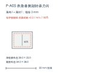
P-A05 · 衣身单侧别针承力片 裁剪数量：薄布1＋薄衬1 面料：M5 点击查看带尺寸、缝线和裁边的原图完整服装试版 / v0.2 / mm
巡猎 · 万代坐姿娃
尚无万代娃体实测围度：本套使用独立列出的假设设计基准，可替换参数重出衣片；不是已确认适配万代的成衣版。
每层衣服的外形与穿搭关系
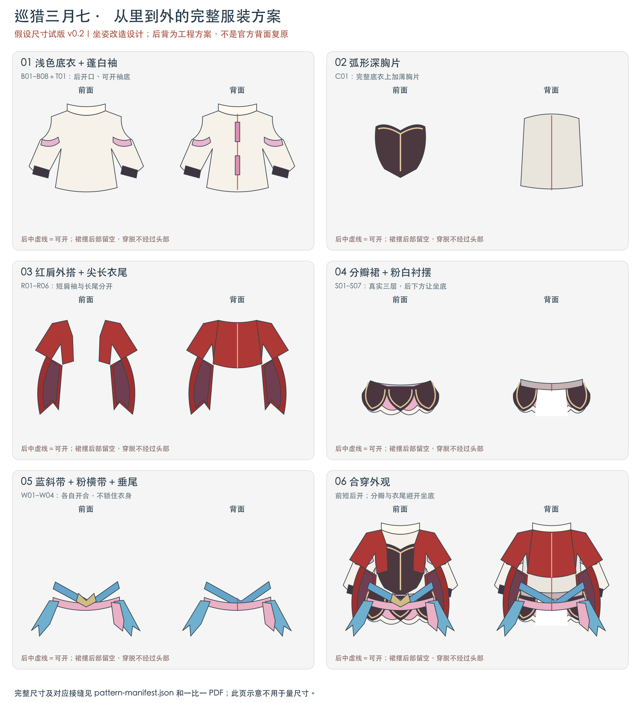
全套衣片总览
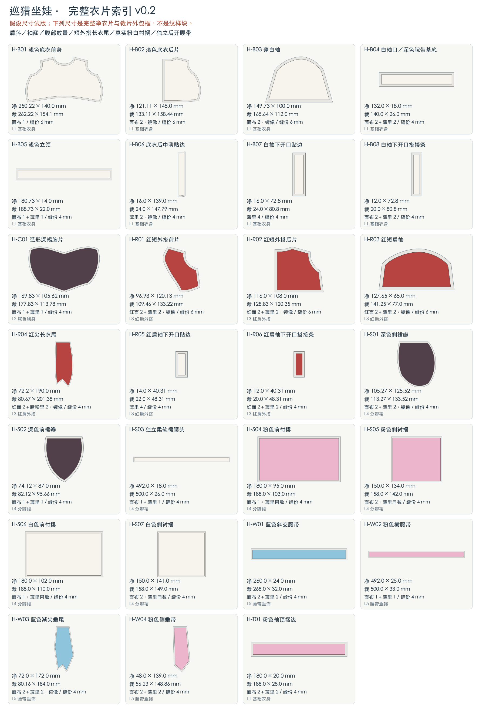
逐片查看 · 27 种版片
前后片、袖片、裙片及贴边各自列出；裁几片、镜像还是对折，以单片标注为准。整套图不可统一缩放来调尺码。
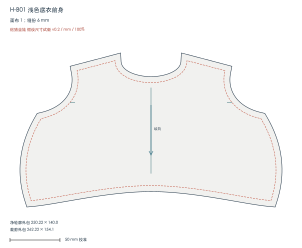
H-B01 · 浅色底衣前身 裁剪数量：面布 1 面料：M5 点击查看带尺寸、缝线和裁边的原图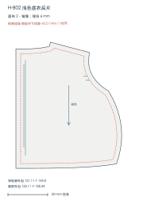
H-B02 · 浅色底衣后片 裁剪数量：面布 2，镜像 面料：M5 点击查看带尺寸、缝线和裁边的原图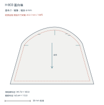
H-B03 · 蓬白袖 裁剪数量：面布 2，镜像 面料：M5 点击查看带尺寸、缝线和裁边的原图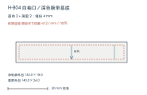
H-B04 · 白袖口／深色腕带基底 裁剪数量：面布 2＋薄里 2 面料：M5；深色外层可用M2 点击查看带尺寸、缝线和裁边的原图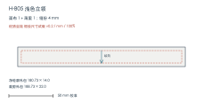
H-B05 · 浅色立领 裁剪数量：面布 1＋薄里 1 面料：M5 点击查看带尺寸、缝线和裁边的原图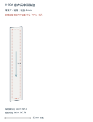
H-B06 · 底衣后中薄贴边 裁剪数量：薄里 2，镜像 面料：M5 点击查看带尺寸、缝线和裁边的原图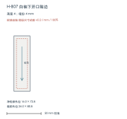
H-B07 · 白袖下开口贴边 裁剪数量：薄里 4 面料：M5 点击查看带尺寸、缝线和裁边的原图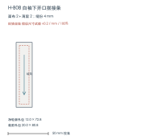
H-B08 · 白袖下开口搭接条 裁剪数量：面布 2＋薄里 2 面料：M5 点击查看带尺寸、缝线和裁边的原图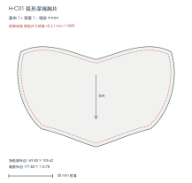
H-C01 · 弧形深褐胸片 裁剪数量：面布 1＋薄里 1 面料：M2 面＋M3 薄里 点击查看带尺寸、缝线和裁边的原图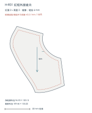
H-R01 · 红短外搭前片 裁剪数量：红面 2＋薄里 2，镜像 面料：M3 点击查看带尺寸、缝线和裁边的原图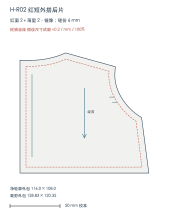
H-R02 · 红短外搭后片 裁剪数量：红面 2＋薄里 2，镜像 面料：M3 点击查看带尺寸、缝线和裁边的原图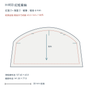
H-R03 · 红短肩袖 裁剪数量：红面 2＋薄里 2，镜像 面料：M3 点击查看带尺寸、缝线和裁边的原图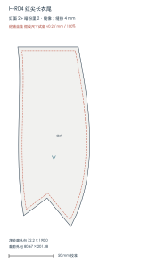
H-R04 · 红尖长衣尾 裁剪数量：红面 2＋暗粉里 2，镜像 面料：M3 点击查看带尺寸、缝线和裁边的原图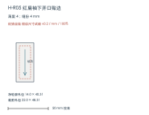
H-R05 · 红肩袖下开口贴边 裁剪数量：薄里 4 面料：M3 点击查看带尺寸、缝线和裁边的原图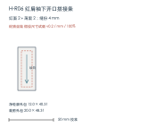
H-R06 · 红肩袖下开口搭接条 裁剪数量：红面 2＋薄里 2 面料：M3 点击查看带尺寸、缝线和裁边的原图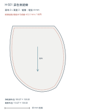
H-S01 · 深色侧裙瓣 裁剪数量：面布 2＋薄里 2，镜像 面料：M2 面＋M3 薄里 点击查看带尺寸、缝线和裁边的原图 H-S02 · 深色前裙瓣 裁剪数量：面布 1＋薄里 1 面料：M2 面＋M3 薄里 点击查看带尺寸、缝线和裁边的原图 H-S03 · 独立柔软裙腰头 裁剪数量：面布 1＋薄里 1 面料：M5 或M3 点击查看带尺寸、缝线和裁边的原图 H-S04 · 粉色前衬摆 裁剪数量：面布 1，薄里同数 面料：M3 点击查看带尺寸、缝线和裁边的原图 H-S05 · 粉色侧衬摆 裁剪数量：面布 2，薄里同数 面料：M3 点击查看带尺寸、缝线和裁边的原图 H-S06 · 白色前衬摆 裁剪数量：面布 1，薄里同数 面料：M5 点击查看带尺寸、缝线和裁边的原图 H-S07 · 白色侧衬摆 裁剪数量：面布 2，薄里同数 面料：M5 点击查看带尺寸、缝线和裁边的原图 H-W01 · 蓝色斜交腰带 裁剪数量：面布 2＋薄里 2 面料：M4 点击查看带尺寸、缝线和裁边的原图 H-W02 · 粉色横腰带 裁剪数量：面布 1＋薄里 1 面料：M4 点击查看带尺寸、缝线和裁边的原图 H-W03 · 蓝色渐尖垂尾 裁剪数量：面布 2＋薄里 2，镜像 面料：M4 点击查看带尺寸、缝线和裁边的原图 H-W04 · 粉色侧垂带 裁剪数量：面布 2＋薄里 2 面料：M4 点击查看带尺寸、缝线和裁边的原图 H-T01 · 粉色袖顶褶边 裁剪数量：面布 2＋薄里 2 面料：M3 点击查看带尺寸、缝线和裁边的原图